爱因斯坦
所有理论的目标都是将基本要素尽可能减少和简化，而不是考虑完整地呈现真实的体验。
学习一项新事物最好的方法之一，是通过具体的范例，而不是抽象的理论。所以，在本章中，我会给出几种常见、简单但很重要的系统范例，来帮助大家更好地理解系统，包括复杂系统的一些基本原则。
这就像我们去逛一个动物园，有利也有弊。好处是，我们可以在一个地方快速地看到很多不同种类的动物，让自己对动物有一个总体的概念；但问题是，动物园中的动物远非动物的全部，我们只不过接触到部分代表，而且按科属进行了分类——这边是猴子，那边是熊。虽然你能通过与熊的对比，观察到猴子的行为特征，但这样的观察是有缺陷的：一是动物园为便于管理，将各种动物彼此分隔开；二是动物园无法真实地再现动物们的生存环境。而在大自然中，各种动物是混杂在一起的，相互影响，与生态环境密不可分。
因此，我们在这里所提到的几类系统，在真实的情境中通常也是相互关联、相互作用的；不仅如此，它们也会和我们没有提到的其他一些系统相互影响，共同组成了我们身处其中的各种复杂系统，嘈杂、喧闹、纷繁、多变。
好了，现在，让我们把生态系统放到一边，先走进“系统大观园”，一种动物接一种动物地看看吧。
典型代表：温度调节器
在上一章所提到的咖啡冷却的例子中，你已经认识了调节回路逐渐趋向于某个目标（“寻的”）的行为特征，那么，如果有两个这样的回路，情况会怎么样？是否会牵引着一个存量朝向两个不同的目标变化？
这类系统的一个典型范例是居室的温度调节器装置，它控制着你房间的制热或制冷（如果是传统的火炉，只能制热；如果是现代的空调，就既能制热，也能制冷）。跟其他模型一样，图2—1中的温度调节器是一个简化了的家用制热系统的工作原理。
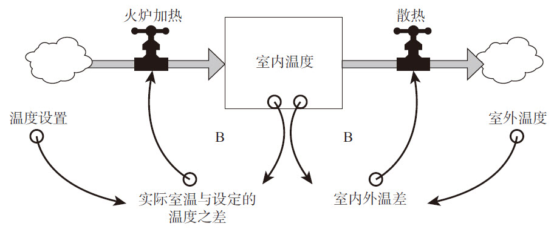图2—1 受温度调节器和火炉控制的室内温度
这一系统的工作原理很简单：当室温低于设定的温度时，温度调节器探测到这一差异后会发出启动火炉加热的信号，从而提高室内温度；当室温升高，超过设定温度时，温度调节器则不再加热。这一调节回路由一个存量维持（如图2—1中左半部分所示）。如果系统中没有其他因素，并且你所设定的室温是18℃，那么该系统的运作情况将如图2—2所示。由于一开始室内温度很低，火炉会打开并开始工作，房间里的温度逐渐提高，当室温达到设定的温度时，火炉会关掉，房间会一直保持在你所设定的目标温度。
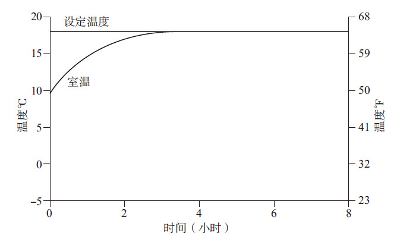图2—2 室温快速升高到设定的温度
然而，事实并非如此，这也不是系统中唯一的回路，因为热量会散失到室外。热量流出的调节回路如图2—1中的右半部分所示。就像咖啡冷却的案例一样，这一回路的目标是使室内外温度一致。如果这是系统中唯一的回路的话（也就是说假设没有火炉），系统运作的情况就会如图2—3所示，一开始室内较温暖，然后热量逐渐散失，室内温度逐渐下降，最后和室外温度相差无几。
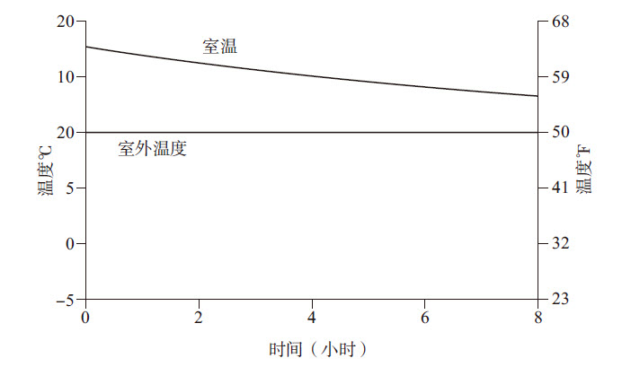图2—3 室温慢慢下降接近室外温度
以上这种情况是假设房间的保温效果不是很好，由于存在室内外温差，一些热量会从室内散失到室外。房屋的保温效果越好，温度降低的速度就会越慢。
好了，现在让我们看一看，当以上两个回路同时运作时，情况会怎么样？假设房间的保温效果足够好，火炉的功率很充足，制热的回路将取代制冷的回路居于主导地位；结果是，房间里会很温暖，即使刚刚你还在冰天雪地的日子里处于一个冰冷的房间里（如图2—4所示）。
随着室温的升高，向外流出的热量也在增加，因为室内外温差加大，但是由于火炉持续加热，流入的热量超过了流出的热量，所以室温会逐渐达到目标温度。至此，火炉释放的热量与从室内流失的热量达到了均衡。
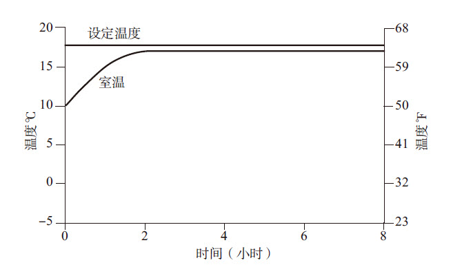图2—4 制热回路取代制冷回路居于主导地位
在这个案例中，虽然温度被设定为18℃，但均衡的室温会略低于18℃。这是因为存在向外的热量散失——即使火炉因室温未达到设定目标值而一直加温，但同时仍有一些热量在源源不断地流失到室外。这是两个相互矛盾的调节回路，这样的系统会呈现类似的特征，有时会产生人们意想不到的结果。就像你试图让一个底下有漏洞的水桶装满水一样，一切尝试都是徒劳的。更糟糕的是，如果漏出的水受一个反馈回路的影响，水桶里的水越多，水桶底的水压越大，从破洞中流出的水流量也会增加。在上述案例中，如果我们试图让室内比室外更暖和一些，那么屋里越暖和，向外的热量散失也会越快。这就要让火炉花更多的时间去工作，以弥补更多的热量散失，与此同时便伴随有更多的热量在散失。因此，保温效果更好的房间，热量散失更慢，这样往往比一个保温效果差却装备着一个大火炉的房间更令人感到温暖舒适。
对于家用制热系统，人们已经知道需要将温度设定得比他们实际需要的温度稍高一点。当然，具体高多少，是一个相对棘手的问题，因为在越冷的日子里，热量向外散失的速率越高。对此，人们并不会太精确地计算或控制，只要大致地设定一个自己感到舒适或能够接受的温度即可。
但事实上，在现实生活中，对于其他与此有着同样结构（一个存量、两个相互制衡的调节回路）的系统来说，系统中的存量会持续地变化，如果你试图去控制它，可能会产生一些问题。
例如，假设你试图将商店里的库存量维持在特定水平，由于从订购到进货存在一定的时间延迟，你不可能立即以新货物补足已售出的货物，也无法准确地预计在你等待订购的货物到来之前可能售出多少货物，你就可能面临断货的风险，库存量不可能一直充裕。同样，相似的状况还会出现在下列情况下：公司试图保持现金收支的平衡、水库试图保持蓄水量的稳定，或者化工厂试图在一套连续反应装置中保持化学药品的浓度一致。
系统之思
由反馈回路所传递的信息只能影响未来的行为。它不能足够快地发送一个信号，去修正由当前反馈所驱动的系统行为。哪怕是非物理性的信息，也需要时间反馈到系统之中。
从这里，我们可以得出一条很重要的系统基本原则：由反馈回路所传递的信息只能影响未来的行为，不能立即改变系统当前的行为。因为信息经由反馈回路的传递需要时间，如果你根据当前反馈做出了一项决策，它不能足够快地发送一个信号，去修正由当前反馈所驱动的系统行为，这期间必然有一定的延迟。所以，你的决策只能影响未来的行为，不能改变当前的系统行为。
系统之思
在一个由存量维持的调节回路中，设定目标时，必须适当考虑补偿对存量有重要影响的流入和流出过程。否则，反馈过程将超出或低于存量的目标值。
为什么说这条原则很重要呢？因为它意味着，在行为与结果响应之间经常会有时间延迟。也就是说，一个流量不能立即对其自身做出调整，它只能对存量的变化做出反应，而这必然是在一段时间的延迟之后，等待信息反馈达到一定程度。至于时间延迟的长短，取决于具体的系统情境。例如，对于一个浴缸，你可能只需要花很少时间，就可以估计出水的深度，从而决定调整水的流量。但对于一个复杂的经济系统，一个决策可能需要很长时间才能见到效果，而信息的反馈通常非常缓慢、微妙、杂乱，难以把握。因此，很多人在对经济学相关问题进行建模时，经常假设消费或生产会快速地对诸如价格等要素的变化做出反应，这肯定是错的。真实的经济系统肯定不是这样运作的。
从温度调节器这一简单系统中，我们还可以得出一条具体的原则：在类似的系统中，流量的散失和补充过程是持续的、动态变化的，不能静止地看。如果意识不到这一点，存量的目标水平就难以维持。
例如，假设你希望室内温度达到18℃，你必须考虑到热量的持续散失，从而将温度设定得略高于期望值；如果你想偿付自己的信用卡欠款，你必须考虑到利息支出和期间的开支，从而稍微提高偿还金额，以便补足还款期间所发生的费用；如果你希望增加员工人数，必须尽快地招聘到位，以防在招聘期间再有员工离职。
换句话说，对于类似的系统，你必须考虑到所有重要的流量，否则系统的行为就可能让你大失所望。
在我们结束这一小节之前，让我们看一看当外部温度波动时，温度调节器系统是如何运作的。图2—5显示的是一个正常工作的温度调节器系统在24小时内的一般运作情况，同期室外温度在夜间降低到了冰点以下。由于火炉供给的热量很好地弥补了向室外散失的热量，在室内暖和起来之后温度几乎没有变化。
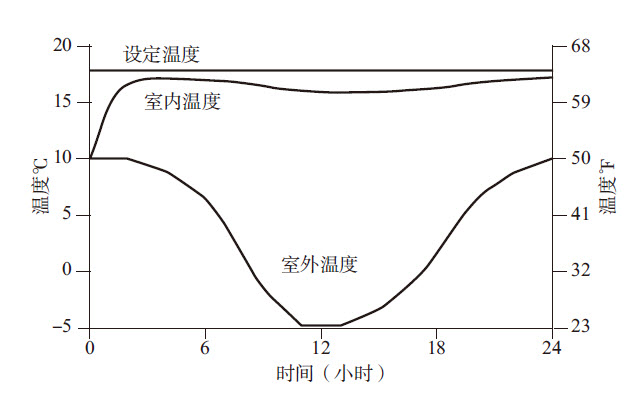图2—5 当气温很低时，保温效果较好的房间室温变化情况
每一个调节回路都有它的转折点，此时其他回路会取代该回路而居于主导地位，使存量远离它的目标且无法自动回到动态平衡状态。这在温度调节器系统中也可出现。例如，你减弱火炉制热的功率（假设更换一个更小的火炉，或少放一些柴火），或者加大制冷回路的影响力（如室外温度更低、降低保温效果，或者打开门窗）。图2—6反映的就是室外温度与图2—5相同但热量散失更快的情况。在这种情况下，当室外温度较低时，火炉不能确保供给足够多的热量，在一段时间里，使室温降低并逐渐趋向室外温度的回路占据了主动，于是房间里的温度显著降低了。
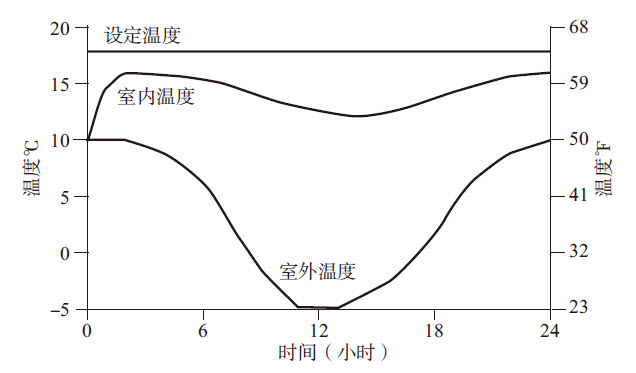图2—6 当气温很低时，保温效果不好的房间室温变化情况
如果你能参照本书附录中的公式做出这个模型，你就可以看到，随着时间的推移，图2—6中的各种变量如何相互关联。一开始，室内外的温度都很低；由于火炉供给的热量超过了散失到屋外的热量，室内逐渐暖和了起来。经过一两个小时之后，由于室外温度逐渐升高，火炉源源不断补给的热量完全弥补了外流的热量，室温就能达到并保持在接近期望的温度。
但是，当室外气温开始下降时，外流的热量也加大了，虽然火炉还是全速地工作，但产生的热量不足以很快地弥补二者的缺口（即火炉产生的热量少于外流的热量），于是室温开始下降。最后，室外温度又开始回升，外流热量减少，火炉补充的热量终于又占了上风，室温开始回升。
按照我们在浴缸案例中提出的法则，当火炉补充的热量超过外流的热量，室温就会上升；反之，温度就会降低。如果你能认真研究一下这一系统行为图的变化，并将其与系统的反馈回路图结合起来，你就能很好地理解系统在结构上如何相互关联，以及结构如何影响系统的行为——该系统有两个反馈回路，它们之间相互影响，此消彼长，随着时间推移而动态变化。
典型代表：人口和工业经济
如果有一个增强回路、一个调节回路，同时作用于一个存量，情况会怎样？这其实是最常见、最重要的系统结构之一。在众多案例中，与我们每个人都息息相关的人口和工业经济体系就是这样的系统（如图2—7所示）。
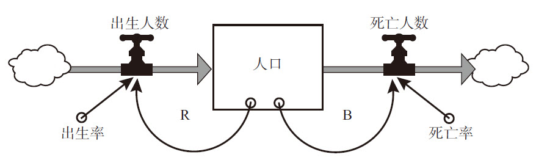图2—7 人口受出生（增强回路）和死亡（调节回路）的影响
人口受到一个增强回路和一个调节回路的影响：增强回路决定新出生的人数，受出生率的影响，导致人口数量增长[1]；调节回路影响当期死亡的人数，受死亡率的影响，导致人口数量减少[2]。
如果出生率和死亡率是常数（在真实情况下很少如此），这一系统的行为就很简单：它将以指数方式增长或减少。至于变化的方向，取决于决定出生人数的增强回路和决定死亡人数的调节回路谁的效果更强。
例如，2007年全球人口总数为66亿，出生率约为21‰，死亡率是9‰。由于出生率高于死亡率，增强回路占了主导地位，人口总数以指数级方式增加。如果出生率和死亡率一直保持不变，那么，一个现在出生的孩子，到他或她60岁时，将看到世界人口已经翻了一番还多（如图2—8所示）。
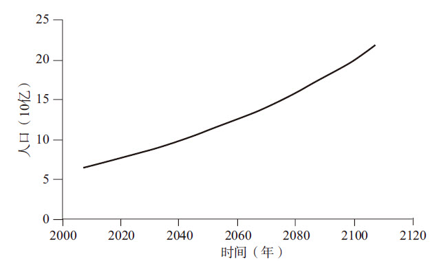图2—8 世界人口增强回路
按照2007年的出生率和死亡率，世界人口将呈现指数级增长态势。
假设由于一次可怕的瘟疫，死亡率提高了，比如说达到了30‰，而出生率仍保持在21‰，那么决定死亡人数的调节回路将占据主导地位。由于每一年死亡的人数多于当年新出生的人数，人口总数就会逐渐下降（如图2—9所示）。
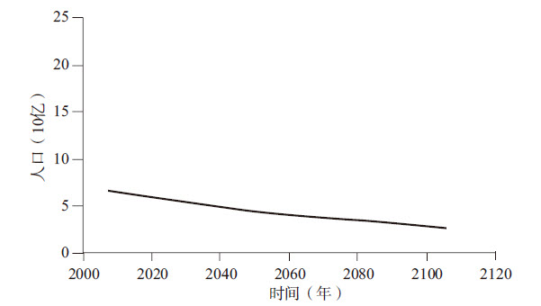图2—9 世界人口调节回路
如果死亡率达到30‰，而出生率维持在2007年21‰的水平，世界人口将呈现指数级减少的态势。
如果出生率和死亡率不是常数，都会随着时间变化，事情就变得更有趣了。过去，联合国在进行长期人口预测时，通常会假设随着经济的发展，各国的平均出生率会下降；同样，一直到最近，人们通常会假设死亡率也会逐渐降低，但降低的速度会慢很多，因为世界上大部分国家的死亡率已经比较低了。然而，由于艾滋病的蔓延，联合国现在假设，在未来50年中，一些受到艾滋病影响的地区，人均寿命增长的趋势将会减缓。
受流量（新生和死亡）变动的影响，系统中存量（人口）的行为也会随时间而变化，但变化曲线是不规则的。例如，如果全球的出生率稳步回落，到2035年与死亡率持平，并且二者在此后均保持稳定，世界总人口变化将趋向平稳：每年新出生的人数刚好等于当年死亡的人数，达到动态平衡（如图2—10所示）。
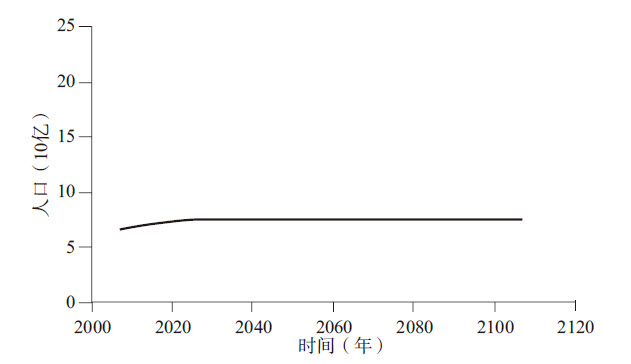图2—10 世界人口动态平衡
若出生率等于死亡率，人口将保持稳定。
这一行为是反馈回路之间“主导地位转换”的例子。“主导地位”是系统思考中的一个重要概念，当一个回路相对于另外一些回路居于主导地位时，它对系统的行为就会产生更强的影响力。虽然系统中经常有好几个相互矛盾的反馈回路同时在运作，但只有那些居于主导地位的回路才能决定系统的行为。
在人口系统中，一开始，由于出生率高于死亡率，推动人口增长的增强回路就居于主导地位，所以系统的行为是指数级增长；但是，随着出生率的降低，这一回路的影响力逐渐弱化；最后，它刚好等于与死亡率相关联的调节回路的力量。在这一点上，没有哪个回路占据主导地位，系统最终达到动态平衡状态。
在温度调节器系统中，当室外温度降低而热量从保温效果不好的房间里流失，超过了火炉补充的热量时，你也可以发现“主导地位转换”的现象。此时，冷却回路取代了加热回路而居于主导地位。
系统之思
当不同调节回路的相对优势发生改变时，系统常会出现一些复杂的行为，由一个回路主导的某种行为模式会变为另外一种。
人口系统只有少数几种行为模式，而这取决于出生率、死亡率等关键变量的状况。对于只有一个增强回路和一个调节回路的简单系统来说，可能性就那么几种。如果增强回路居于主导地位，与增强回路和调节回路相关联的存量就会呈现指数级增长；如果调节回路居于主导地位，存量就逐渐衰退（趋向于一个目标）；如果两个回路势均力敌，存量就会维持在一个特定水平上（如图2—11所示）。如果两个回路的相对优势随时间而变化，出现“轮流坐庄”的局面，系统就会波动（如图2—12所示）。
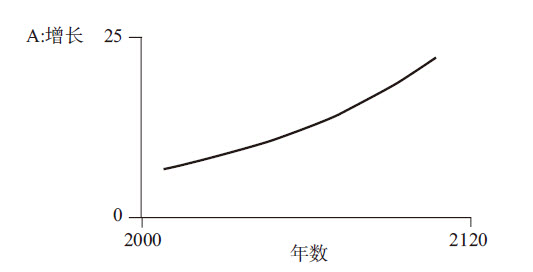图2—11 人口系统的三种可能行为：增长、衰退和稳定
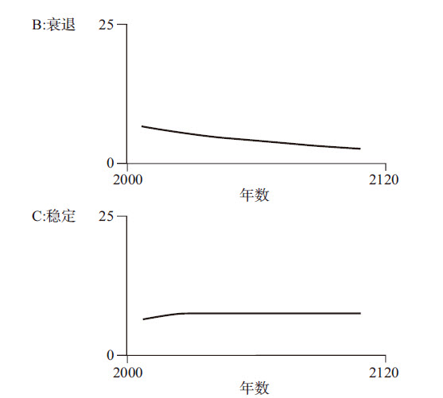图2—11 人口系统的三种可能行为：增长、衰退和稳定（续）
这里，我选取了一些极端的人口情景，以展示模型中的一些要点以及它们所产生的新情景。当你面对某个情景时，例如听到经济预测、公司预算、天气预报、未来气候变化以及股票经纪人关于某只股票价格走势的预测等，你可以思考下列问题，以帮助你判断这些表述是否真实有效地反映了系统潜在的结构。
●各种驱动因素会不会以这种方式发挥作用？例如，出生率和死亡率可能处于什么样的水平？
●如果驱动因素这样发挥作用，系统将以何种方式应对？例如，出生率和死亡率真的会像我们想象的那样影响人口存量的变化吗？
●影响各种驱动因素的又是什么？例如，什么会影响出生率，什么会影响死亡率？
实际上，第一个问题很难回答，因为这是对未来的猜测，而未来从本质上讲是不确定的。虽然你可能认为自己对未来很有把握，但除非未来真正到来了，否则仍然无法验证你的观点是否正确。通过系统分析，人们可以进行一系列情景测试，以便观察当各种驱动因素处于不同状况时，系统状况如何。这通常是系统分析的一个目的。但是，你仍然需要拟订各种情景，并判断哪种或哪些情景可能发生，需要认真分析。
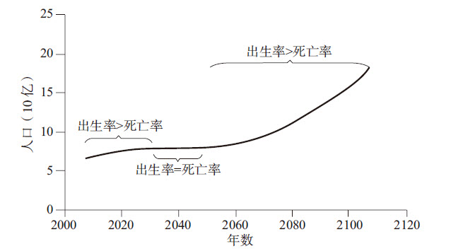图2—12 驱动出生和死亡的反馈回路发生主导地位转换
动态系统分析的目的通常不是预测会发生什么情况，而是探究在各种驱动因素处于不同状况时，可能会发生什么。
系统提示
测试模型价值的问题
1）各种驱动因素会不会以这种方式发挥作用？
2）如果驱动因素这样发挥作用，系统将以何种方式应对？
3）影响各种驱动因素的又是什么？
相对于第一个问题，第二个问题更为科学，而这取决于模型的质量。如果模型质量高，能够反映系统特有的动态性，我们就可以更好地解释，当某种或某些驱动因素以一种方式变动时，系统可能以何种方式应对。
系统之思
系统动力学模型可探究未来的多种可能性，让我们进行“如果……会怎么样”这样的思考。
如上所述，对于人口系统，不管你认为出生率与死亡率变化的可能性怎么样，对第二个问题的答案大致是肯定的，因为我们这里所使用的人口模型是很简单的，其行为变化模式只有那么几种可能性。当然，我们可以进一步使其精细化，例如对人群按年龄划分。但是，上面这个简单模型基本上就能反映真实的人口变动状况，具体数字可能不太准确，但基本的行为模式却是真实的。
系统之思
模型的价值不取决于它的驱动情景是否真实（其实，没有任何人能够对此给出肯定的答案），而取决于它是否能够反映真实的行为模式。
第三个问题“影响各种驱动因素的又是什么”，指的是什么东西会影响流入量和流出量。这是与系统的边界有关的问题，需要认真研究，看看哪些驱动因素是完全独立的，而哪些是系统内部的变量。
例如，人口规模是否会反过来影响到出生率和死亡率？是否还有其他因素，如经济、环境或者社会趋势等，会影响到出生率和死亡率？人口规模是否会影响到这些经济、环境和社会方面的因素？
当然，这些问题的答案都是肯定的。出生率和死亡率也是被一些反馈回路所左右的，其中一些反馈回路本身也受人口规模的影响。人口这一系统本身只是一个更大的系统中的一部分。
在这个更大的系统中，经济是一个很重要的影响人口的子系统。在经济系统的核心，也存在一个“增强回路+调节回路”的系统，其结构与人口系统类似，因此这两个子系统也具有类似的行为模式（如图2—13所示）。
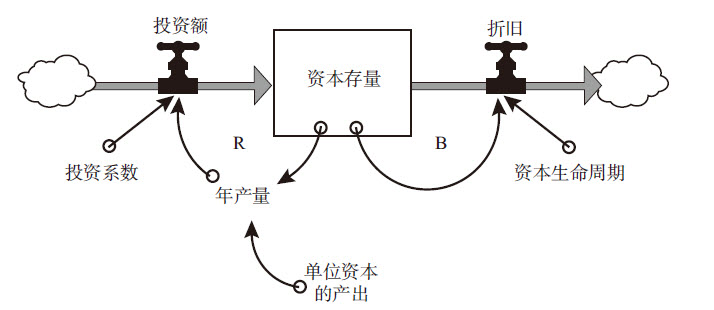图2—13 经济系统行为变化模式
与人口系统类似，经济系统中也有一个驱动增长的增强回路（外部投资）和一个导致衰退的调节回路（折旧）。
在经济系统中，实体资本（如机器设备和工厂等）的存量越大、生产效率（即单位资本的产出）越高，产量（产品和服务）也就越大。而产量越大，就可以有更多的投资形成新的资本。这是一个增强回路，就像人口系统中新出生人数所在的那个回路。在这里，投资系数相当于出生率。投入产出比越高，资本存量的增长就越快。
另一方面，实体资本会由于折旧和磨损而逐渐消耗。这是一个调节回路，类似于人口系统中死亡人数所在的回路。资本的“死亡率”取决于资本的平均寿命：生命周期越长，每年资本淘汰或置换的比例就越小。
因为这个系统和人口系统结构相同，它们也具有相同的行为模式。和世界人口一样，近年来，世界资本存量也被增强回路所主导，从而呈现出指数级增长态势。至于未来它将继续增长还是保持不变，抑或衰退，取决于影响它的增强回路和调节回路二者孰强。这体现在：
●投资系数——每年社会上有多少产出用于再投资，而不是被消耗掉；
●资本的效率——要想获得特定的产出，需要消耗多少资本；
●资本的平均生命周期。
如果用于再投资的投资系数是一个常数，资本的效率也相对稳定，资本存量的变化趋势将取决于资本的生命周期。在图2—14中，有三条曲线，显示的是三种资本平均生命周期的资本存量变化情况。当资本生命周期相对短暂时，资本消耗速度快于更新速度，再投资量无法抵消折旧的影响，经济将慢慢陷入衰落；当折旧刚好与投资持平，经济就会处于动态平衡；假如资本的生命周期很长，资本存量将呈指数级增长。资本的生命周期越长，增长的速度越快。
这里体现了系统的一项基本原则：你可以通过减小流出量的速率或者加大流入量的速率，来使存量增长。我们之前已经遇到过，这又是一个典型范例。
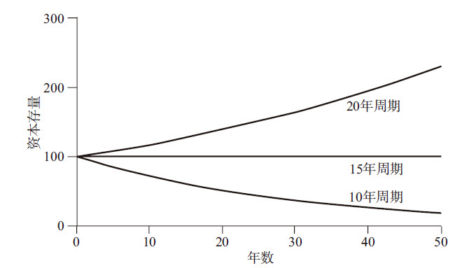图2—14 资本存量的增长与资本生命周期之间的关系
假设单位资本的产出比为1：3，投资系数是20%，在这种情况下，资本生命周期为15年时，折旧与资本更新速度持平；资本生命周期越短，资本存量将陷入衰减。
正如人口系统中出生率和死亡率受很多因素的影响一样，在经济系统中，也有很多因素影响产出率、投资系数和资本生命周期，例如利率、技术、税收政策、消费习惯以及价格等。人口系统也会影响投资，包括为产出提供劳动力、增加消费需求，并由此减小投资系数。经济系统的产出也会以多种方式反馈并影响到人口系统，例如经济越富裕的地区医疗保健条件通常较好，从而降低了死亡率；同时，经济富裕地区的出生率通常也较低。
事实上，在长期经济系统建模时，都会考虑经济系统和人口系统以及它们之间的联系，以反映二者如何相互影响。经济发展的核心问题是如何防止资本积累的速度慢于人口增长速度。这是两个增强回路，前者受经济增长的回路所推动，若前者快于后者，就可以使人们越来越富裕，否则就将陷入越来越贫穷的泥沼之中。
系统之思
具有相似反馈结构的系统，也将产生相似的动态行为。
如果我将上面提到的经济系统与人口系统叫做同一类“动物”，不知道你是否会感到奇怪？一个是关于工厂设备、进货出货和经济往来的经济系统，另外一个是关于婴儿出生、长大、再生儿育女、逐渐变老并最终逝去的人口系统，二者在表象、运作等多个方面似乎都有很大差异。但是，从系统的角度看，它们之间有一个很重要的共同点：相同的反馈回路结构，即都有一个存量，受到一个推动成长的增强回路和一个导致消亡的调节回路的影响，也都有一个老化的过程，无论是用钢筋水泥建造的工厂，还是车床、汽轮机，都会像人一样慢慢变老，并最终寿终正寝。
我们之前讲过，我们所观察到的系统行为主要是由其自身所引起的。同样，系统理论的另外一项核心见解是，具有相似反馈结构的系统，也会产生相似的动态行为，即使这些系统的外部表现是完全不同的。
例如，虽然人口与工业经济系统表面上差异很大，但它们的行为模式却基本相似：可以自我更新，以指数级方式增长，都会逐渐老化和衰亡。之所以如此，是因为它们有相似的系统结构。同样，咖啡杯的冷却与房间室温的降低、放射性物质的衰变、人口或工业经济系统的老化和衰亡也基本相似，这些都是调节回路作用的结果。
典型代表：库存
想象一下一家汽车经销商的仓库，它有一定的库存量，也有一个流入量（从各家工厂订货交付的汽车）和一个流出量（因销售给客户而被提走的汽车）。从结构上看，汽车库存量的行为变化模式会像一个浴缸的蓄水量。
现在，让我们看一下这一系统是如何运作的。假设要维持足够10天销售的库存量（如图2—15所示）。汽车经销商需要保持一定的库存，因为每天到货交付的数量和销售量不可能完美地匹配，而且每天客户的购买量也很难预测。此外，经销商还需要多保持一些额外的库存作为缓冲，以防供应商偶尔出现交货延迟或其他意外情况。
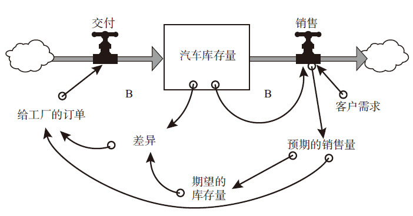图2—15 汽车库存量的行为变化模式
一家汽车经销商的库存量由两个运转方向相反的调节回路来保持平衡，一个是因销售而产生的流出量，另一个是到货交付的流入量。
经销商会对销售进行监控、分析和预测，例如，如果他们发现销量有增长趋势，就会据此增加给工厂的订单，以便增加库存，满足未来可能加大的销量。因此，销售量变大，意味着未来预期的销售量也会变大，导致实际库存与期望库存之间的差距加大，这将导致向工厂下达的采购订单量增加。一段时间之后，到货量将增加，从而提高库存量，应对未来可能出现的更大销售量。
从结构上看，这一系统是温度调节器系统的翻版，都是一个存量受两个相互制衡的调节回路的影响。在本例中，一个调节回路是把车销售出去，从而导致库存减少，另一个是向供应商订购的车辆到货交付，从而导致库存增加（也可以看做是补足因销售而减少的库存）。图2—16显示的是顾客需求增加了10%的情况。波澜不惊，是吧？
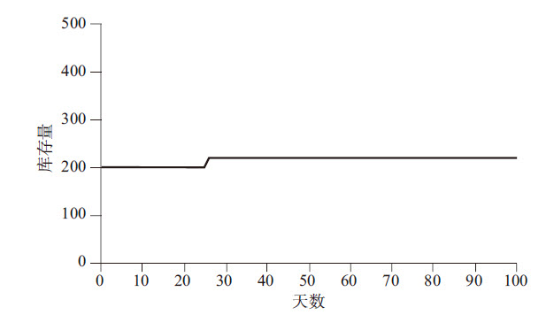图2—16 库存量变化情况
从第25天开始，顾客需求永久性地增长了10%，相应地，经销商的库存量也增加了这么多。
在图2—17中，我们对这个简单的模型进行了一些微调，加入了三个时间延迟（感知延迟、反应延迟和交货延迟），这些都是我们在现实中经常会遇到的情况。
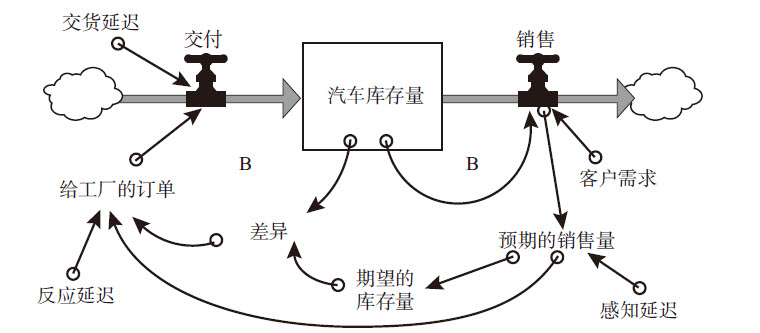图2—17 有时间延迟的汽车库存量行为变化模式
首先是感知延迟，这与人们的主观认识有关。经销商不可能对销售量的任何变化都立即做出反应。在制定订货数量决策时，人们通常会将过去一段时间内的销售量进行平均，以发现销售量的变化是真实的趋势，还是短期内的波动或异常。
其次是反应延迟，即当形势已经很明朗了、需要调整订单数量时，经销商也不会在某笔订单里将所有缺货一次性地调整到位。相反，他会在其后的每笔订单中多增加一部分。也就是说，即使当他相信销售量的变化趋势是真实的，他也只会部分地进行调整，以便在其后的几天内进一步确认这一趋势。
第三是交货延迟。从供应商的工厂收到订单、加工生产并发货到交付给经销商，要花5天时间。
虽然这一系统和简单的温度调节器系统一样，只是由两个调节回路构成的，但它的行为变化却和后者有着明显的差异。例如，想象一下，当客户需求和随后的销售量增长了10%之后，库存量会有怎样的变化？图2—18是库存量随时间变化的示意图。
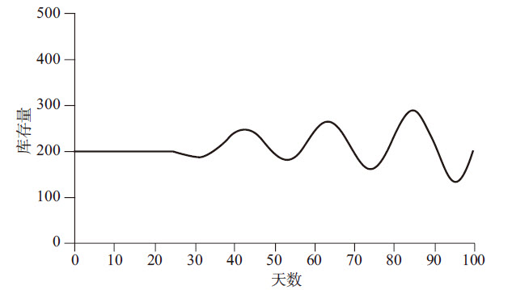图2—18 库存量随时间变化情况（一）
当系统中存在时间延迟时，库存量会随销售额增加而上下振荡。
是的，剧烈振荡！一开始，销售量的微小增长，导致了库存的下降；经过几天的观察，经销商感知到销售量增长的趋势确实存在，而且将会持续，所以他们开始订购更多的车，不仅要满足增大的销量，而且要补足之前因销售而导致的库存差距。但是，因为存在交货延迟——即在经销商发出采购订单到其拿到车之间，有一段时间的延迟或滞后，在这期间，库存量继续降低，经销商会进一步加大采购订单的数量。
最后，大量的订货终于源源不断地到货交付，补足了之前的差额，并持续地推高库存量，因为在前一段时间里经销商下了太多的订单。现在，他们意识到了自己的错误，并开始减少订单量。但是，之前所下的大额订单仍然不断地到货交付。因此，他们更大幅度地削减订单量。事实上，由于他们无法洞悉未来的走势，几乎不可避免地会将订单削减得过多。于是，库存会再次变得过低……如此循环往复，库存量会围绕新的预期库存量上下振荡。从图2—18、图2—19可以看出，少数几个时间延迟会造成系统行为多大的变化！
系统之思
调节回路上的时间延迟很可能导致系统的振荡。
稍后我们会探讨有哪些方法可以抑制这些振荡，但首先，很重要的一点是，我们必须理解为什么会产生这些振荡。这不是因为这家经销商的经理或决策人愚蠢，而是因为他们置身于一个缺乏及时的信息反馈的系统之中。由于存在物理的分割和时间延迟，他们很难甚至不可能实时地了解自己的行为对于库存量变化的影响。他们也不知道顾客下一步会做什么；当顾客的行为有了一些变化，他们也不能肯定这些变化是否会持续下去。当他们发出一个订单，他们也不能得到立竿见影的响应。在真实的商业环境中，信息不对称以及物理延迟的情况是非常普遍的。因此，在很多其他系统中，类似这样的振荡也是很常见的。想象一下，当你在酒店中享受淋浴时，如果冷热水混合器与喷头之间有很长的管道（会导致反馈延迟），那么你在调节水温时，很可能会直接地体验到水温振荡的“乐趣”。
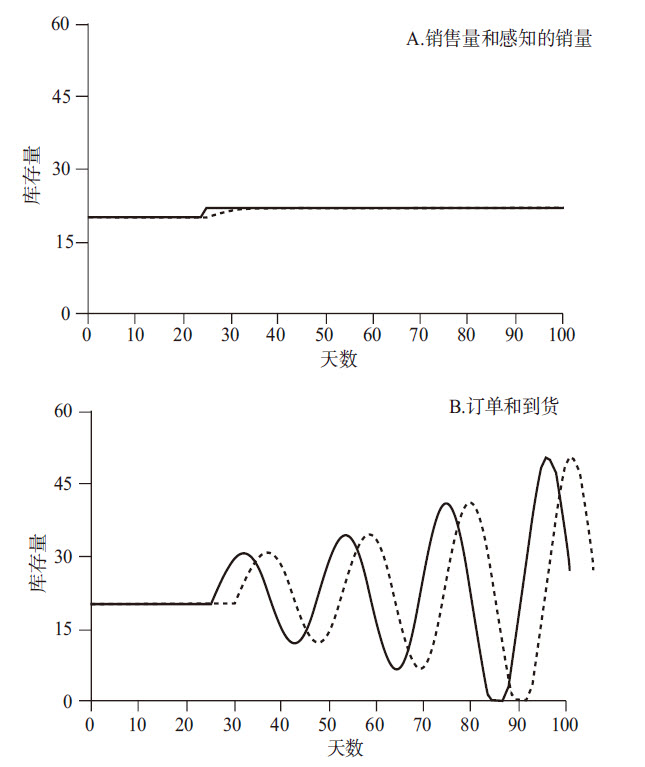图2—19 订单和交付对需求增加的反应
A中的实线显示的是在第25天，销售量有一个很小但突然的阶梯式上升；虚线是经销商对前三天的销量进行平均，所感知到的销量的变化；B中实线和虚线分别是对应的订单和实际到货情况。
至于说一个延迟在什么情况下会引起怎样的振荡，这并不是一个简单的问题。我会用上述库存系统来向你解释具体的原因。
“这些振荡真是令人无法忍受，”经销商气愤地说，因为他们本身也是一个会学习的系统，所以决心改变一下库存系统的行为：
我要缩短时间延迟。虽然对于交货延迟，我左右不了，因为那主要取决于供应商，但我可以加快自己的反应。在确定订单数量时，我以前选取的是前5天的平均销量，现在我只选取前两天的平均数，这样就可以更快地响应销售量的变化了吧。
如果他们真的这样做了，图2—20就是调整之后库存量变化的示意图——从图上看，虽然供应商缩短了感知延迟时间，但基本上没有变化，库存量的振荡甚至还有些恶化。
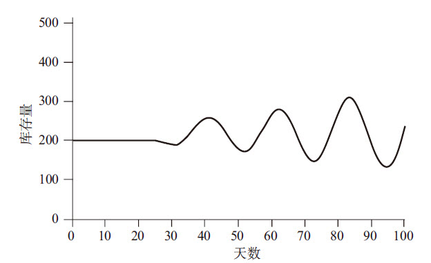图2—20 库存量随时间变化情况（二）
即使缩短了感知延迟时间，库存量对于需求增加的反应模式依然如故。
如果这位经销商不是缩短感知延迟时间，而是缩短其反应时间，例如将感知到差距的时间从3天缩短到2天，情况会怎么样？
事实上，事情只能变得更糟，如图2—21所示。
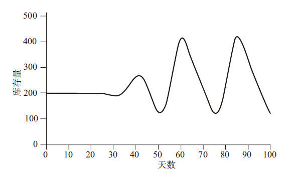图2—21 库存量随时间变化情况（三）
如果缩短反应延迟时间，库存量的振荡将更加恶化。
作为一个善于学习、调整的人，经销商知道必须做些什么来改变这种状况。“高杠杆效应，但方向错误”，经销商这样对自己说。他已经注意到，销售量的微小变化会显著影响到订单和库存量的变化，而自己奉行的试图抑制振荡的政策是不奏效的。
系统提示
“变化”的可能后果
其实，这种“好心办坏事”或“越采取干预措施，问题越恶化”的情况很常见。人们通常出于好意，试图借助一些政策或干预措施来修补系统出现的问题，但结果往往事与愿违，甚至将系统推向错误的方向。同时，你的动作越大，对系统的影响就越强烈。当我们试图改变一个系统时，系统的行为往往违背我们的直觉，出乎我们的意料。
对于这个系统，造成问题的部分原因不是经销商的反应太慢了，而是太快了。在系统既定的状况下，经销商有些反应过度了。如果经销商不是将反应延迟从3天缩短到2天，而是延长到6天，事情就会好转许多，如图2—22所示。
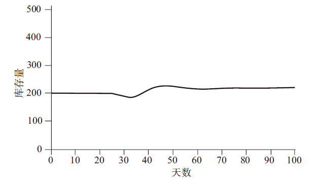图2—22 库存量随时间变化情况（四）
在延长反应延迟时间的情况下，对于同样的需求变化，库存的反应很平缓。
如图所示，在同样销售变化的情况下，振荡明显地减缓了，而且系统会很快地找到新的均衡状态。
系统之思
在系统中，时间延迟是普遍存在的，而且它们对系统行为有很强的影响。改变一个延迟的长短，可能会导致系统行为的很大变化，也可能不会，这取决于该延迟的类型以及与其他延迟相比的相对时间长短。
在该系统中，最重要的延迟是交货延迟，它不在经销商的直接控制之中。但是，即使没有改变这一延迟的能力，经销商也可以学会如何更好地管理库存。
改变系统中的延迟可能使系统更容易被管理，也可能完全相反。所以，有时候连一些系统思考专家对于时间延迟的问题也有些迷惑。为此，一看到系统中存在时间延迟，我们总是非常警觉，会认真分析它们存在于哪儿，时间多长，是信息流的延迟还是物理过程的延迟等。在某种意义上可以说，如果我们不知道延迟在哪儿、时间多长，我们就不可能真正理解系统的动态行为。从上文我们已经知道，一些延迟可能成为强有力的政策杠杆，延长或缩短它们可以使系统行为产生显著变化。
从一个更大的视角上看，一家经销商的库存问题可能是微不足道、可以被解决的，但想象一下，如果这是全美未售出的汽车库存，会怎么样？
●订单的增减不仅会影响到整车组装厂和零部件供应商的产量，而且会影响到钢铁厂、橡胶厂、玻璃、纺织制品和发电厂等一系列相关企业。在这个庞杂的系统中，到处都有感知延迟、生产延迟、交货延迟和建设周期延迟。
●让我们再考虑一下汽车生产和就业之间的关联。增加产量会提高就业人数，从而使更多的人可以去买车。这是一个增强回路，当然也可以往相反方向运转：产量减少，就业人数减少，购车数量降低……
●还有另外一个投机性股票买卖的增强回路，即基于近期业绩，投资者买进或卖出汽车制造商和供应商的股票，产量的提升必将导致股价的上涨，反之亦然。
这是一个非常庞大的系统，不同工业部门之间相互联系，经由各种延迟相互影响，推动彼此的振荡，并被各种乘数效应和投机因素所放大，这是商业周期形成的主要原因。虽然总统或政治领袖会更容易抑制或强化经济回暖或衰退带来的乐观或悲观情绪，但这些周期并非源自总统。总之，经济是一个无比复杂的系统，充满了各种调节回路和时间延迟，它们本质上具有波动性。
典型代表：石油经济
到现在为止，我们所讨论的系统都没有考虑外部因素的约束。例如，在工业经济系统中，资本存量未考虑原材料和产出的限制；人口系统中，未考虑食物的限制；在温度调节器系统中，也未考虑火炉可能缺油的限制。因为我们的目的是研究这些系统内在的动态性，所以在构建系统模型时进行了简化，没有考虑外部的约束条件。
但是，任何真实的实体系统都不是孤立存在的，其外部环境中都有各种相互关联的事物。
例如，一家公司离不开稳定的能源和原材料供应商，离不开员工、管理者和顾客；成长中的玉米离不开水分、养料，也少不了昆虫的袭扰；人口与食物、水和生存空间息息相关，也少不了就业、教育、健康医疗和很多其他因素。同时，任何使用能量和处理原材料的系统，都需要置放废弃物的场所，或者处置废弃物的过程。
因此，任何物理的、成长的系统，或早或晚都会受到某种形式的制约。这些限制因素通常以调节回路的形式存在，在某些条件下，这些调节回路会取代驱动成长的增强回路成为主导性回路，要么是提高流出量，要么是减少流入量，从而阻碍系统的进一步成长。
在现实环境中，受限制的成长是非常普遍的，以至于系统思考专家将其当成一种“基本模型”[3]，命名为“成长上限”（limits-to-growth）。所谓“系统基模”，指的是一些常见的系统结构，可以导致人们熟悉的一些行为模式。在第5章中，我们将介绍更多的系统基模。事实上，以后每当我们看到一个成长的系统，不管是人口、一家公司，还是一个银行账户、一则谣言、一种流行病，或者新产品的销售，我们都可以找出驱动其增长的诸多增强回路，也必然能找到最终限制其增长的调节回路。即使尚未占据主导地位，似乎还看不到它们对系统行为的影响，但这些调节回路肯定存在，因为没有任何真实的物理系统可以永无止境地成长下去。
系统之思
在呈指数级成长的实体系统中，必然存在至少一个增强回路，正是它（或它们）驱动着系统的成长；同时，也必然存在至少一个调节回路，限制系统的成长，因为在有限的环境中，没有任何一个物理系统可以永远地增长下去。
例如，再热销的新产品，也总会有市场饱和的一天；核反应堆或原子弹中的链式裂变反应威力再强大，也终将耗尽核燃料；再凶猛的病毒，总有一天会无人可感染；再蓬勃发展的经济，也将受到实体资本或金融资本、劳动力、市场、管理、资源或污染等诸多条件的限制。
在我看来，资源与污染是一组相对的概念，正如资源是流入量，是供应源，有可再生性资源和不可再生性资源之分，污染的限制也有的是可修复的，有的是不可修复的。如果环境没有足够的能力吸收污染物，或使其无害化，污染就是不可修复的；反之，就是可修复的。当然，环境对污染物的消纳能力通常是有限且可变的。因此，在这里我们所说的受资源约束的系统，和受污染影响的系统具有相同的动态行为，只不过二者方向相反。
系统之思
限制性调节回路发源于可再生性资源或者不可再生性资源，是有所区别的。区别不在于成长能否永远持续，而在于成长以何种方式终止。
对成长的限制有可能是临时的，有可能是永久性的。有时候，系统可以找到其他途径，暂时或相对长期地“绕过”阻碍因素，再次实现成长。但最终肯定会产生某种类型的调适，要么是系统适应了限制因素，要么是限制因素适应了系统，或者彼此适当调整。当这些调适出现时，可能会产生一些有趣的系统动态。
现在让我们看一个实例。假如有一家公司，通过提炼一种不可再生性资源（比如石油）来赚钱。它们刚刚发现了一个巨大的新油田，如图2—23所示。
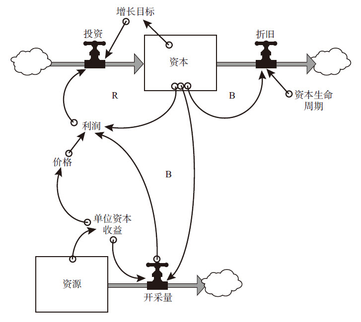图2—23 有一个增强回路且受到不可再生资源限制的经济资本系统
图2—23看起来可能比较复杂，但它从本质上还是我们上面已经看到过的资本—增长系统，只不过用“利润”代替了“产出”。
驱动折旧的调节回路大家已经熟悉了：资本存量越多，机器设备的磨损和消耗越大，从而减少资本存量。在本例中，资本存量是开采和提炼石油的设备，按20年来提取折旧，这意味着每年计划提取5%的减值损失费用。为了保持并扩大产能，石油公司将获得的部分利润用于再投资，来提高资本的存量。所以，这里有一个增强回路：更多的资本存量可获得更多的资源开采量，创造更多的利润用于再投资。在这里，我们假设公司每年预计有5%的资本增长。如果当年利润不能支持5%的增长，则将全部利润均用于再投资。
众所周知，利润等于收入减去成本。在本例中，我们将收入简化为石油价格乘以石油产量；成本等于资本总额乘以单位资本的运营成本（包括能源、劳动力、原材料等）。同时，为了简便起见，我们将价格和单位资本的运营成本都假定为常数。
在这里，我们未将单位资本的资源收益假定为常数，这是因为这些资源（石油）是不可再生的，随着石油开采量的增加，一口口油井终将枯竭，下一桶石油的获得将比上一桶更加困难。对于石油存量来说，开采量是流出量，但是没有流入量；剩余的资源要么埋藏得更深，要么浓度更低，或者开采难度更大。人们不得不更多地使用一些更加昂贵和技术复杂的措施去获取该资源。
这是一个新的调节回路，并最终会限制资本的增长：更多的资本导致更快的开采速度，从而更快地降低资源储量。资源储量越少，单位资本的资源收益就越低，利润就越少（假设价格是固定的），再投资比率就越小，资本的增长速度也将降低。我们假设资源枯竭可以通过运营成本和资本效率反映出来。在现实商业世界里，这两方面都是真实存在的：一些油田要么因运营成本过高，要么因资本效率过低而被废弃。无论哪种情况出现，后续的行为模式都是一致的。如图2—24所示，这是一个典型的衰竭行为。
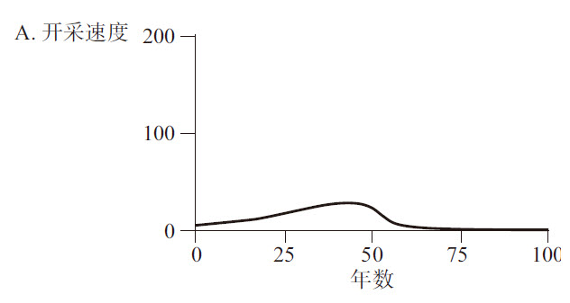图2—24 资本积累的速度越快，资源枯竭得越快
开采（A）会带来利润，导致资本（B）的增长，并将逐渐耗尽不可再生性资源（C）。
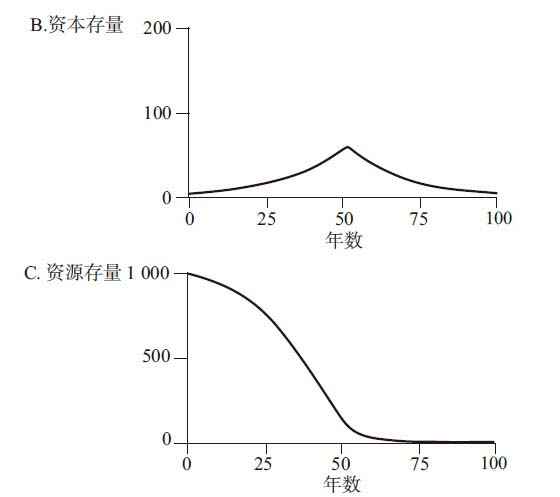图2—24 资本积累的速度越快，资源枯竭得越快（续）
开采（A）会带来利润，导致资本（B）的增长，并将逐渐耗尽不可再生性资源（C）。
一开始，地下石油储量很充足，按最初的设计规模可开采200年。但是，由于增长的指数效应影响，实际开采量在第40年左右的时候达到了顶峰，之后迅速衰竭。按照每年10%的投资系数，资本存量和开采速度均每年增长5%，因此到第14年翻了一番。28年后，资本存量变成了原来的4倍，开采量却受单位资本产出率下降的拖累而未能同步增长。到第50年，资本存量的维持成本已经超过了从资源开采中获得的收入，因此利润不足以维持投资的增长，投资小于折旧。很快地，随着资本存量的衰减，运营也停止了。剩余的最昂贵的资源被长留在地下，因为从经济和商业的角度上看，把它们开采出来已经没有价值了（如图2—25所示）。
如果资源的实际储量被证明是最初估计的2倍或4倍，情况会怎么样？当然，石油开采总量会有很大差异，但在每年再投资率为10%、资本增长率保持5%的情况下，资源每翻一番都会使开采高峰期延长14年左右，与石油开采相关的产业、社区、就业等的繁荣期也相应地延长了。
系统之思
当一个变量以指数级形式逼近一项约束或限制时，其接近限制的时间会出乎意料地短。
如果你构建的资本存量依赖于一项不可再生性资源，那么它增长得越高、越快，下跌得就可能越深、越快。在资源开采或应用以指数级增长时，若不可再生性资源储量翻番或扩大4倍，只能稍微延长一些开发的时间而已。
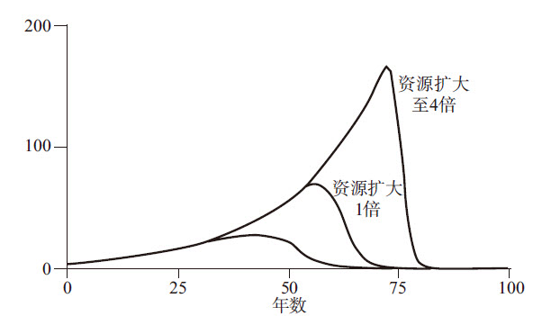图2—25 资源储量每翻一番都只能使开采高峰期延长14年左右
如果你只关心最大限度地开采资源赚钱，那么该系统中最重要的数字就是资源的最终规模。比如，你是一名油田或矿井上的工人，你关心自己能工作多少年以及社区是否稳定，那么你最需要关注的两组数字是：资源的规模以及预期的资本增长率。我们知道，反馈回路的目标对于系统行为是很关键的，这就是一个很好的例子。对于不可再生性资源的管理，真正需要做出抉择的是快速致富、“过把瘾就死”，还是无须那么富有，但可以持续的时间更长。
图2—26显示的是，假设扣除折旧后预期的年资本增长速度分别为1%、3%、5%和7%时，开采速度的变化情况。当增长速度为7%时，设计开发周期为200年的油田，将在40年内达到开发高峰。别忘了，你的决策不只会影响到公司的利润，也会对社会和地区自然环境造成影响。
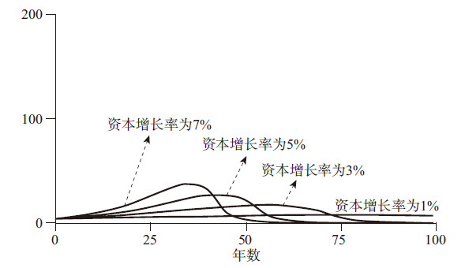图2—26 资本增长率与开采高峰的关系
再投资比例越高，开采高峰期到来得越快。
之前我们曾讲过，为了简化，我们假设价格是常数。但是，如果价格是变动的，情况会怎么样呢？假设短期内资源对消费者很重要，价格过高将减少需求。在这种情况下，随着资源日渐稀缺，价格会快速升高，如图2—27所示。
价格越高，公司的利润就越高，所以投资增加，资本存量持续上升，而且更多的剩余资源可能被开采出来。把图2—27和图2—24做一下对比，可以发现，价格上涨的主要结果是让你积累更多的资本存量，但不能避免最终的崩溃。
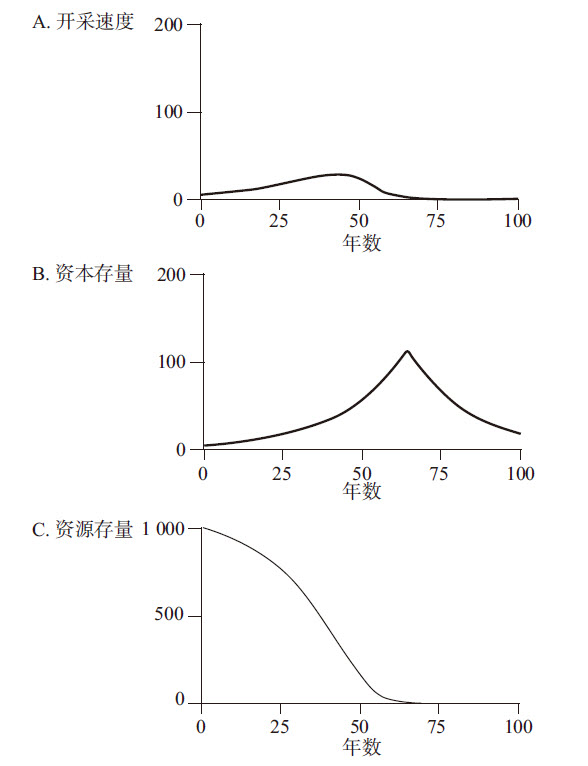图2—27 价格上涨最终导致资源枯竭
价格上涨加大了资源的稀缺性，有更多的利润用于再投资，使得资本存量（B）变得更大，并使开采时间（A）更长，结果是资源存量（C）被快速耗尽。
顺便提一下，如果价格不上涨，而是技术进步导致运营成本降低，也会导致相同的结果。例如，人们发明了一种先进的油井回收技术，或者从接近枯竭的铁矿中提取低等级铁矿石的精选过程，或者一种氰化物萃取方法，可以从金或银的尾矿中提取贵金属等，就可能出现类似情况。
我们都知道，单个的矿山、化石燃料储藏和地下水都可能会枯竭。世界上有很多废弃的矿井、油田，都可以验证我们上面所探讨的情况。那些资源或能源企业也知道这些系统动态。所以，当它们在一个地方正常运营但发现资本效率开始下降时，就会转到其他地方投资，以发现和开发另外一处资源储藏。但是，如果存在地域限制，这些公司最终还会展开全球性运作吗？这个问题就留给各位读者去判别吧。
系统提示
依靠不可再生性资源的经济体系
根据资源耗尽的动态行为特性，初级资源存量越大，新的发现越多，驱动成长的增强回路相对于限制性的调节回路的影响力就越强，导致资本的存量越高，开发速率越快；然而，一旦生产高峰过去，经济衰退也开始得更早，速度更快，而且幅度越大。
也许，我们应该尝试建立一个完全依靠可再生性资源的经济体系了。
典型代表：渔业经济
假设在上文所述的资本系统基础上，我们给资源存量增加一个流入量，使其成为可再生性资源。这样，我们就能得到我们即将开始探讨的渔业经济系统。在这里，可再生性资源是鱼，资本存量是渔船。其实，类似这样的系统还有很多，例如树木与伐木场、牧场与奶牛等。
●有生命的可再生性资源，如鱼、树木、草等，可以经由一个增强回路实现自我再生。
●无生命的可再生性资源，如阳光、风、河水等，虽然没有可再生的增强回路，但是不管存量的当前状态如何，它们都有稳定的补给输入来源。
●感冒病毒感染、日用品销售等，也与“可再生性资源系统”具有相同结构。对于病毒感染来说，易感人群是可再生性资源存量；对于日用品销售，潜在消费者也是可再生的存量。就像虫害只能部分地损害农作物，而不能完全摧毁农作物一样。作物可以再生，而昆虫可以吃得更多。
在所有这些案例中，对于约束性资源存量，都有一个流入量，保持资源存量的补给（如图2—28所示）。
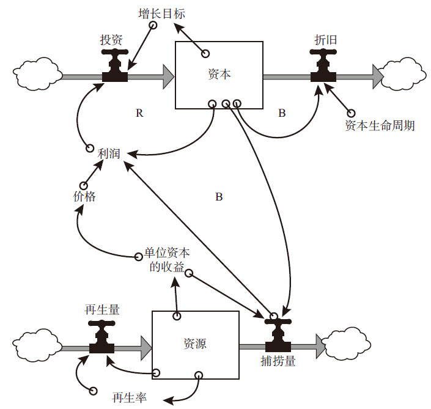图2—28 经济资本受一个增强回路推动而成长，并受一个可再生性资源约束的情况
我们以渔业为例。首先，假设资本的生命周期为20年，每年产业增长率维持在5%。其次，和不可再生性资源一样，我们假设渔业资源由于日益稀缺而价格上涨，这将带动开发力度加大，并需要增加资本投入。对于渔业公司来说，吨位更大的渔船可以在海上航行更远的距离；而安装声纳设备，可以及时追踪鱼群的动向；装备数海里长的拖网或者船载冷冻系统，可以捕到更多的鱼，并将其从遥远的海上带回港口。所有这些都需要花费资本。
鱼的再生率不是固定的常数，而是依赖于同一海域中鱼的数量，也就是说鱼群的分布密度。如果鱼群密度很大，由于受到食物和栖息地的限制，再生率会接近于零；而随着密度的降低，鱼群再生速度会加快，因为有更多的食物或更大的空间。但是，到了某个点时，鱼群再生率会达到最高峰。超过这个点，如果鱼群数量继续减少，鱼群繁殖速度不是越来越快，而是越来越慢。这是因为每条鱼都很难再找到同类，或者是另外一个物种侵入了它们的领地。
这一简化的渔业经济模型受到三种非线性关系的影响：价格、再生率、单位资本的收益。价格取决于鱼的种类和数量——越稀少的鱼，价格越高；再生率取决于鱼群的密度——鱼群密度越低，鱼的繁殖率越低，但是鱼群密度变得过大之后，鱼的繁殖率也越低；单位资本的收益取决于捕鱼技术和方法的效率。
这一系统可以产生很多种不同的行为模式，图2—29是其中之一。
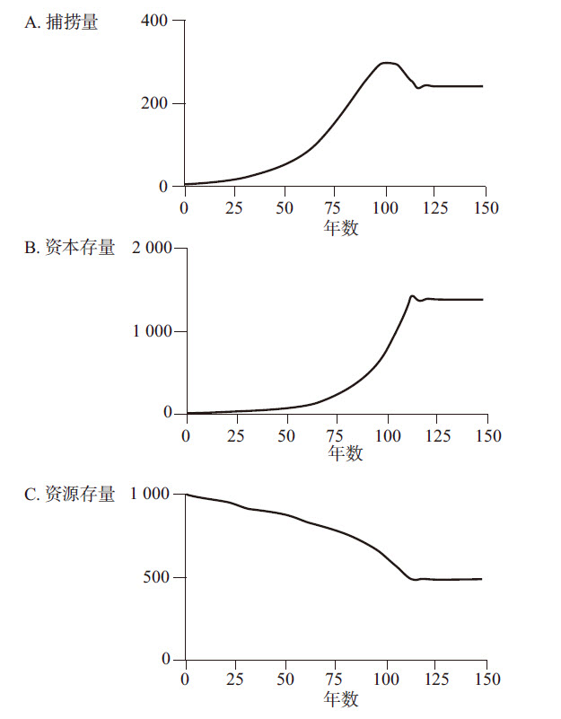图2—29 捕捞量、资本存量及资源存量的关系
每年捕捞量（A）产生的利润，推动资本存量（B）的增长，在稍微过量增长之后，捕捞量趋于稳定，也导致资源存量（C）保持稳定。
从图2—29中可见，一开始资本和捕捞数量以指数级方式上升，鱼群数量（资源存量）则快速下降，但这提高了鱼群的再生率。在其后的数十年中，资源再生数量可以弥补、应付捕捞增加的速度；但最后，由于捕捞量增长太快，鱼群数量下降到不能满足日益扩大的捕捞量需求，捕捞量降低，从而降低了船队的利润率和投资速度。这形成了一个调节回路，使得船队和鱼资源之间达到了平衡。船队达到一定规模后，不能永远扩大下去，但是可以一直保持较高且稳定的效率。
然而，只要对单位资本产出做很小的调整，改变其控制的调节回路的力量，就能产生显著的差异。假设人们发明了一种改进船只效率的技术，通过更好的声纳设备，可以发现更稀少的鱼群。这样，即使鱼群减少了，但每一艘船获得同样捕捞量的能力都稍微提高了一些（如图2—30所示）。
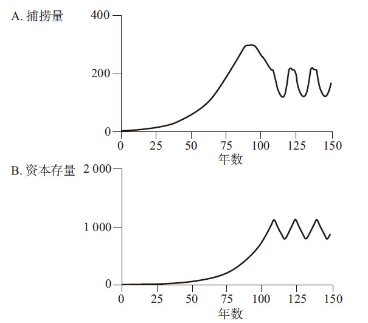图2—30 技术改进带来系统振荡
单位资本的收益稍微升高一些，例如提高技术的效率，会造成围绕捕捞量（A）、资本存量（B）和资源存量（C）的稳定状态的过度开发和振荡行为。
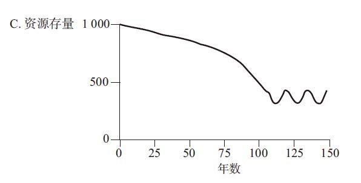图2—30 技术改进带来系统振荡（续）
单位资本的收益稍微升高一些，例如提高技术的效率，会造成围绕捕捞量（A）、资本存量（B）和资源存量（C）的稳定状态的过度开发和振荡行为。
我们之前曾见过“高杠杆效应，但方向错误”的状况，图2—30又是另外一个案例。技术改进，增加了所有渔民的生产率，却导致系统陷入不稳定之中，振荡再次出现。
系统之思
不可再生性资源主要受限于存量。所有存量一次到位，然后被逐渐开发使用（流出量）。之所以不能一次性开发，主要是因为资本（和开发条件）的限制。由于存量是不可再生的，开采速度越快，资源的生命周期就越短。
如果捕鱼技术得到提高，船只可以在鱼群密度很低的情况下更为经济地维持运作，但结果只能是鱼和捕鱼业接近彻底消亡。海洋变成荒漠，鱼也逐渐变成了不可再生性资源。图2—31显示的就是这一情景。
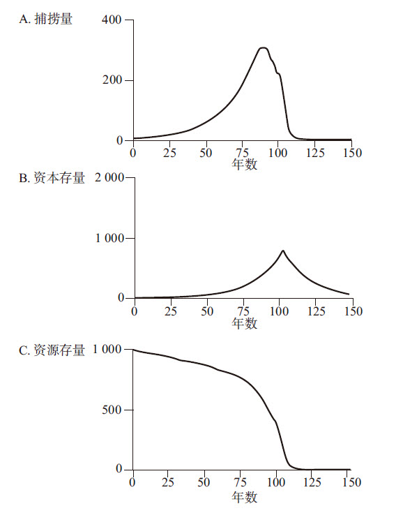图2—31 技术进步最终导致崩溃
单位资本产出上升得越高，越会造成捕捞量（A）、经济资本（B）和资源存量（C）的过度开发和崩溃的行为模式。
与我们这里所讨论的简化模型相比，在很多真实的开发可再生性资源的经济系统中，一旦资本和开发活动的增强回路得以启动，资源通常就会被加速攫取、耗竭，等开发者退出之后，只剩下极少量的“活口”，苟延残喘，或者侥幸得以休养生息而恢复。数十年之后，同样的故事又会再次上演。有些可再生性资源的循环周期很长，例如新英格兰的伐木工业，从成长、过度砍伐、崩溃，到资源的逐渐再生，然后再次砍伐……现在已是第三个循环了。但是，并不是所有的可再生性资源都是如此。由于科技和开发效率的提升，越来越多的资源趋于枯渴，无法再生。
系统之思
可再生性资源主要受限于流量。只要开发（流出量）的速度等于资源再生（流入量）的速度，它们就可以被无限地开采或捕捞；如果开发的速度快于再生的速度，资源存量最终可能低于某个关键转折点，从而转变为“不可再生性资源”，逐渐耗尽。
到底可再生性资源能否在过度开发之后“劫后余生”，取决于在资源严重衰竭的那段时间里发生了什么情况。例如，当鱼群数量变得很少时，它们就会非常脆弱，一次污染、一场龙卷风，或者缺乏基因的多样性，都可能使鱼群彻底灭绝。再如，对于森林和草场资源，裸露的土壤也很容易被风化或流失。生态环境中其他竞争者也有可能“乘虚而入”，侵入、占领这一小生境。当然，在条件合适时，几近枯竭的资源也可以存活下来，并再次繁衍、生息。
在这里，我们可以看到可再生性资源系统的行为模式有三种可能性：
●过度开发，然后逐渐适应、调整至相对稳定的平衡状态，并长期保持；
●过度开发，超出了均衡状态，之后上下振荡；
●过度开发，之后导致资源的枯竭，产业崩溃。
系统提示
两个影响因素
实际会出现哪种结果，取决于两方面：第一，关键转折点是否被突破。一旦关键转折点被突破，资源的种群数量实现再生的能力就会被破坏；第二，在资源逐渐衰减的过程中，抑制投资增长的调节回路的力度。如果该调节回路可以在关键转折点到来之前，快速起作用，控制资本的增长，那么整个系统就能平滑地达到均衡状态；如果该回路速度比较慢，不足够有效，系统就会振荡；如果该回路非常弱，或者起作用的速度很慢，这样一来，即使资源已经降低到难以再生的水平，但资本仍在持续增长，最终的结果是，该资源和产业都将崩溃。
在成长上限结构中，不管是可再生性资源，还是不可再生性资源，物质的存量都不可能永远增长，但是二者对于系统的限制，从系统行为的动态角度上讲是非常不同的。之所以会有差异，原因在于存量和流量的不同。
对于所有复杂的系统来说，判断系统未来行为走势的诀窍在于，了解什么样的系统结构包含哪些可能的行为，以及什么状况或条件可以触发这些行为。换句话说，如有可能，我们可以调整系统结构和相关条件，从而减少破坏性行为发生的概率，增加有利行为出现的概率。
[1] 在特定出生率的情况下，人口越多，当期新出生的人数也就越多，从而进一步增加了人口数量，这是一个增强回路。——译者注
[2] 在特定死亡率的情况下，人口越多，当期死亡的人数也就越多，从而导致人口总数的减少，这是一个调节回路。——译者注
[3] 也可称为“系统基模”，简称“基模”，下同。——译者注